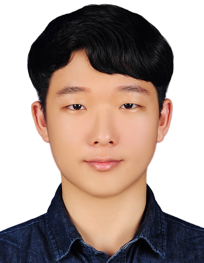

언어와 행동의 연결
VLM / VLA-based
Task and Motion Planning
사람의 의도와 장면의 의미를 이해하고, 실행 가능한 작업·모션 계획으로 연결하는 방법에 관심이 있습니다.

01 / RESEARCH INTERESTS
Physical Ai 기반의 지능형 Robotics 기술이 다양한 현장에서 안정적이고 지속적으로 사용될 수 있도록 로봇의 일반화 지능을 개선하는 연구를 하고자 합니다.
VLM / VLA-based
Task and Motion Planning
사람의 의도와 장면의 의미를 이해하고, 실행 가능한 작업·모션 계획으로 연결하는 방법에 관심이 있습니다.
Robotic Manipulation
& Object Grasping
물체의 자세와 조작 목적을 함께 고려해, 다양한 대상과 작업에 대응하는 파지·조작 지능을 탐구하고자 합니다.
Data-efficient Learning
for Robotics
고충실도 시뮬레이션과 Sim-to-Real, Domain Adaptation을 활용해 실세계 데이터 수집 부담을 줄이는 방향에 관심이 있습니다.
02 / EXPERIENCE & EDUCATION
로봇 플랫폼의 소프트웨어 개발부터
실제 하드웨어와의 통합까지.
2025.01 — 현재 (2026.10 종료 예정)
RASTECH · 로봇연구소
모바일 휴머노이드의 인지·작업 및 모션 계획·제어 파이프라인 개발. 이기종 로봇의 실시간 통신과 텔레메트리 백엔드 구축.
2023.09 — 2024.12
고려대학교 세종캠퍼스 · 네트워크관리연구실
자율주행 차량의 전역 경로 계획을 시각화하는 GUI 개발.
2022.03 — 2023.03 (CV 기준)
고려대학교 세종캠퍼스 · 인공지능시스템연구실
시각장애인을 위한 음성 기반 실내 안내 로봇 개발.
2019.03 — 2025.02
고려대학교 세종캠퍼스
전체 평점 4.21 / 4.50 · 전공 평점 4.36 / 4.50 · 최우등 졸업
ROS 2 · MoveIt 2 · ros2_control · Gazebo · Isaac Sim · DORA
Python · C++ · Docker · FastAPI · Flask · PyQt5
FoundationPose · RT-DETR · RAG · LangChain · Tool Calling
03 / SELECTED PROJECTS
2026.02 — 진행 중 (CV 기준)
객체 탐지와 6D 자세 추정, 모션 계획과 액추에이터 제어를 연결한 작업 수행 파이프라인.
2026.03 — 2026.09
Meta Quest 3와 DORA.rs를 활용한 로봇 팔·손 원격조작 데이터 파이프라인.
웹캠의 상체 키포인트와 기하학적 관절 추정으로 사람의 제스처를 로봇에 전달하는 시스템.
모션 2025.03 — 12 · LLM 2025.07 — 12
캐릭터 로봇의 기구학 모델, 서보 제어, 인터랙티브 모션과 지식 기반 대화 기능 개발.
2025.04 — 2026.09
다양한 로봇의 센서·상태 정보를 표준화하고 제어 명령을 전달하는 비동기 FastAPI 백엔드. Vue–FastAPI–ROS 2 사이를 WebSocket으로 연결해 로봇 관리와 데이터 통합을 지원했습니다.
2025.02 — 2025.12 (CV 기준)
Lanelet2 HD-Map을 파싱하고, 여러 자율주행 청소 차량의 전역 경로를 시각화·디버깅하는 PyQt5 크로스플랫폼 GUI. Kakao Maps API와 HTML/JS 지도를 통합했습니다.
04 / ACADEMIC RECORD
전체 평점
전공 평점
고려대학교 세종캠퍼스 · 컴퓨터융합소프트웨어학과
최우등 졸업 (Great Honored Student)
Y. Jang, J. Choi, Y. Kim, J. Park and M. Kim.
“Pre-processing Trends in Public Datasets for Application Traffic Classification.”
2024 KICS Winter Conference, pp. 1054–1055.
서울대학교 K-MOOC
‘미래를 열어가는 로봇 신기술 및 응용 III’ 수료 · 2026
TOEIC 885 / 990
TEPS 339 / 600